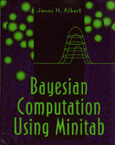

Albert
BAYESIAN COMPUTATION USING MINITAB
by JAMES H. ALBERT (Ph.D., Purdue University), Bowling Green State University
228 pages. 1996.
ISBN: 0-534-51781-1.
BAYESIAN COMPUTATION USING MINITAB contains a set of Minitab macros that offers an effective medium for computation in Bayesian statistics. This software and accompanying guide is suitable for introductory through advanced-level courses.
FEATURES:
- Unique Minitab programs to perform Bayesian calculations--inference programs, predictive programs, testing programs, and prior assessment programs.
- General algorithms that correspond to Minitab programs.
- Simulation methods demonstrated for a range of problems.
Tentative Contents:
1. An Introduction to Minitab.
2. Simulating Games of Chance.
3. Introduction to Inference Using Bayes' Rule.
4. Learning About a Proportion.
5. Comparing Two Proportions.
6. Learning About a Normal Mean.
7. Learning About Two Normal Means.
8. Learning About Relationships: Regression and Contingency Tables.
9. Learning About Discrete Models.
10. Learning About Continuous Models.
11. General Methods of Summarizing Posterior Distributions.
Appendices.
List of Minitab Macros.
Formula Used in the Macros.
To order single copies, please call 1-800-347-7707.
Request a Review
Copy | Send Comments
Return to Table
of Contents | Go to Duxbury Press Home Page
Copyright © 1996 Wadsworth Publishing Company/ITP. All rights reserved.